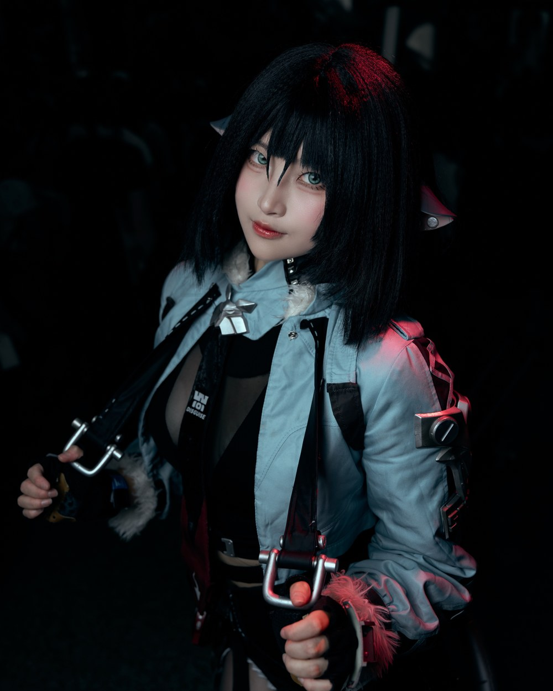
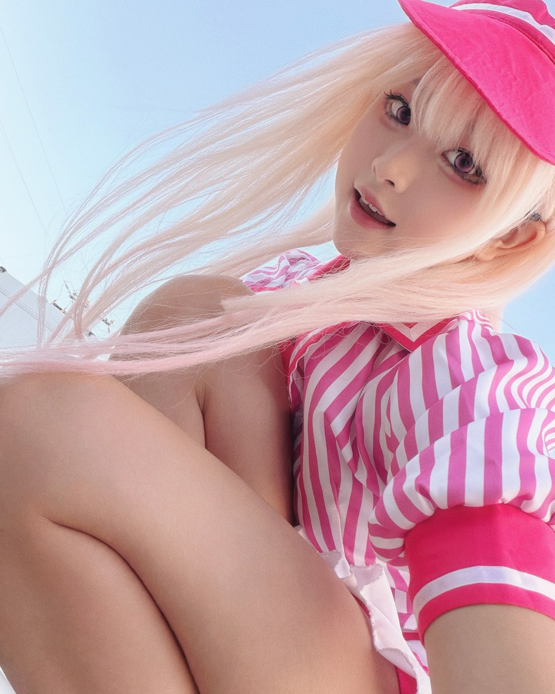
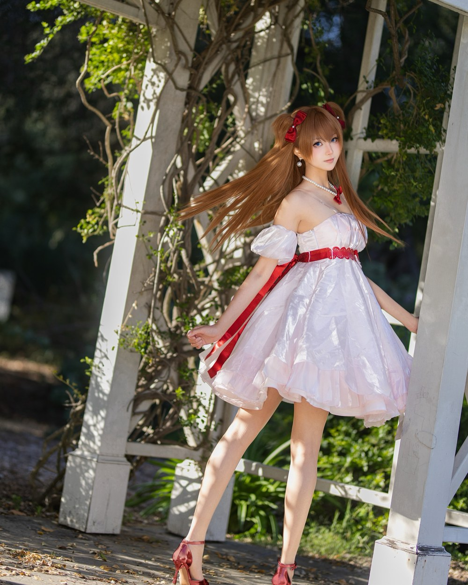
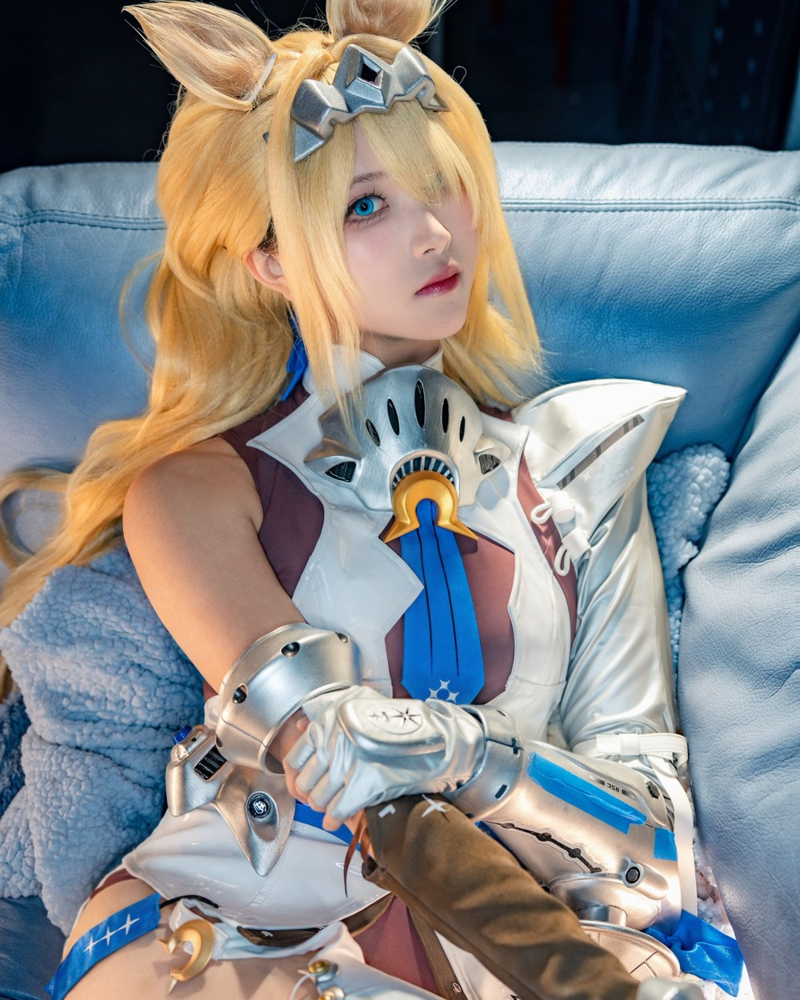

I am Linda Huang, a third-year student at the University of California, Riverside, majoring in Art. I am interested in marketing, especially brand promotion, because I enjoy learning how brands connect with people and how a creative idea can grow into real influence.
Outside of school, I have worked part-time jobs since high school, including at a boba tea shop, a restaurant, and in retail, and I have also worked as a teaching assistant. These experiences taught me how to serve customers, communicate with all kinds of people, and stay calm and responsible during busy hours. I also run a small online shop on Mercari, where I sell cosplay costumes and wigs and handle everything myself, from photographing products and writing listings to packaging and shipping orders.
Creatively, I am a cosplay content creator and photographer. I plan photo shoots, put together costumes and styled looks, and share my work on Instagram, where I have also collaborated with brands on sponsored content. Creating content has taught me how visual storytelling attracts and keeps an audience, which is the same skill that good brand promotion depends on. In the future, I hope to combine my art background with marketing and build a career in brand promotion and creative content.
My creative interests are closely connected. I enjoy drawing, especially watercolor painting, and I also love anime, photography, and cosplay. Each gives me a different way to explore images and express what I like. Watercolor allows me to work with color on paper, while photography and cosplay let me explore visual ideas through people, costumes, and settings. Rather than seeing these as separate hobbies, I see them as different parts of my interest in art.
Among these activities, I especially enjoy photography and photo editing. I like being involved in both taking photographs and working on the images afterward. These interests also connect to my curiosity about brand promotion. I want to introduce people to things I enjoy through photographs and creative content. At the same time, I hope to find opportunities to learn, gain practical experience, and earn income through creative work. I am still exploring what this career could look like, but I would like to keep developing skills that connect my personal interests with professional opportunities.
Through my different jobs and creative activities, I am exploring how my interests and experience can support each other. Working with customers has given me opportunities to communicate with different people, while running my online shop combines practical responsibilities with photography and presentation. My art studies, cosplay projects, and interest in photo editing give me more opportunities to practice creating images. As I continue learning, I hope to bring these experiences together and discover which kinds of creative work I would most like to pursue.
Thank you for visiting my website.
• Took customer orders and supported back-of-house operations.
• Worked in both customer facing and kitchen roles.
• Developed communication and teamwork skills in a busy food service environment.
• Worked as both a restaurant server and a pastry cook.
• Gained hands on experience in customer service and food preparation.
• Balanced part-time restaurant work with university coursework.
• Began volunteering as a teaching assistant in seventh grade.
• Transitioned into a paid teaching assistant role in tenth grade.
• Worked at a booth during a Korean festival.
• Took on occasional jobs supporting other events.
• Prepared and sold desserts for church fundraising activities.
• Donated the proceeds to the church.
• Recorded video footage for a celebration event.
• Gained practical experience documenting a live event.



